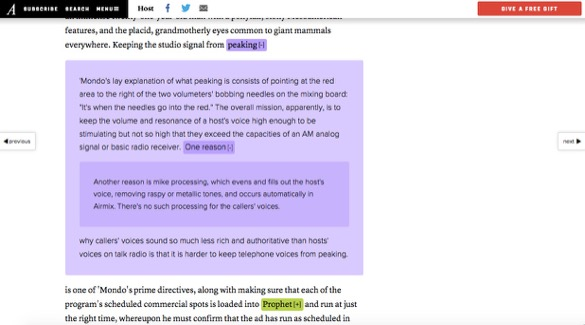

Contextual notes
![]()
Because I tend to select books by how thick they are (super-fast-reader problems) and I am a glutton for punishment, I have been slowly working my way through two of David Foster Wallace’s books concurrently. I am reading a paper copy of Infinite Jest, but the Kindle edition of The Pale King. These contrasting experiences got me thinking about contextual notes, particularly in electronic media.
For Infinite Jest, I have two bookmarks, one for my place in the main text and one for my place in the endnotes. In fact, I sometimes have to employ a third bookmark because many of the endnotes have their own footnotes, which can run on for pages.
In contrast, the Kindle edition of The Pale King lets me click on a hyperlink to the endnote, and if there is a footnote in the endnote I can click that link, and on and on. Once I have reached the end of the rabbit hole, I can use the back button to step my way out of the layers and eventually find my way back to the text, just where I left off.
Especially for an electronic edition, where I couldn’t keep my thumb in the back of the book, being able to travel through the footnotes in this way has been invaluable. But, the paired experiences made me think more about how context is provided in electronic mediums.
In my dissertation, I wrote in an offhand way that
interactive articles on the web can be updated depending on parameter manipulations, and some news outlets have begun including contextual information in their articles. Rather than hyperlinks taking the user away from the page they were reading, New York Magazine includes ephemeral popovers, and Medium has instituted in-context comments linked to a particular paragraph or sentence.
In this quote, I was trying to refer to the sorts of contextual information that can be access unobtrusively if a reader wants to see it, or ignored if they don’t. Of course, I didn’t include a citation, and when I went back looking for these features, I found it hard to track them down. In fact, at one point my googling returned my own dissertation.
I’ve now discovered that while Medium has retained in-context comments they have changed the default for these notes to be private. This really reduces the usefulness of the feature, and I was baffled when I went back to look for it. Finally, I saw a tweet from Memo Akten confirming that they used to have such a feature, but recently removed it.
I guess y'all didn't notice @medium made side-notes private? Little notes to clarify, provide insight now not visible to public. how lovely.
— Memo Akten (@memotv) November 5, 2015
For more about the original functionality, see this 2013 post on Medium. In it, the author (and CEO of Medium?!) writes that the notes can be used “as footnotes.” However, with the defaults changed, that’s not true until the original author goes back and changes the settings one by one.
@xululululuuum @Medium no! I have to delete all my current 'side notes' and recreate them as 'comments'! No automatic way of doing it. #bad
— Memo Akten (@memotv) November 5, 2015
Memo and I aren’t the only ones noticing this. Once I found the original blog post, I noticed that most of the comments were actually from the past month and bemoaning the feature change. I was happy to see some references to other places where this is done well, including Tufte CSS which implements Tufte-style sidenotes in an HTML environment.
The New York Magazine feature seems to have survived, although I haven’t been able to find whatever article I was reading when I wrote about the popovers in my dissertation. I did track down this Niemen Lab piece which talks about an interview with Jon Stewart that uses the feature. Again, I don’t know what article it was that caught my eye while I was writing, and it was hard to locate a more recent piece with the feature.
Another place I have seen side notes used well is in Bret Victor’s explorable essays, like Learnable Programming. Leaving aside the fact that these essays are completely interactive, they do a nice job of balancing the information given to you in the stream of the narrative, and what is included in a Tufte-style side note.
Bret is really a font of knowledge, as you can see when you look at (for example) the contextual notes he provides alongside presentation slides on his website. If you want to watch him talk about the future of programming you can do that, but if you want to dig deeper you can look at the slides and side notes.
When I started writing about this, I did some reading about David Foster Wallace and electronic endnotes, and came across this beautifully designed piece on The Atlantic. In the intro to the article, they note that when it was published in print they did a sort of static popover design, but they recently took the opportunity to redo the article with nested electronic endnotes.

So my question is, if it feels so satisfying to be able to dig deeper into information if we need it, or gloss over the parts we don’t, why isn’t this type of feature more common? And what other features could be included in electronic media to give us more of the same sort of experience?